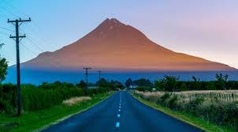
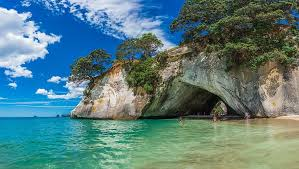

New Zealand offers a fantastic adventure for travellers young and old. Try some of the world's best Sauvignon Blancs in the Marlborough region, check out the remarkable Milford Sound or relax in a natural hot spring in Rotorua.
The Marlborough wine region is world-renowned for its award-winning Sauvignon Blancs. Spend a day or two taking one of the many tours which visit the region's best cellar doors.
 For those looking for adventure, try kayaking or a scenic boat tour. There are a number of fantastic hikes also worth taking. In February each year, the region holds the Marlborough Wine Festival, which is a must visit for lovers of great wine and produce.
Milford Sound is a stunning natural fiord, located on New Zealand's South Island. It extends 15 kilometers inland from the Tasman Sea part of a vast remote wilderness of white snow-capped mountains, glacial lakes and valleys, waterfalls and dense rainforests.. This beautiful natural location draws one million visitors each year, and is one of the country's most popular tourist spots. There are plenty of options for exploring the fiord and its neighbouring sounds. For something adventurous, try canoeing or hiking along the shores. When it rains, you'll be able to take in the spectacular waterfalls which appear.
Christchurch is New Zealand's second-largest city. Most people would have heard of Christchurch, from the devastating earthquake and subsequent aftershocks the city experienced in 2010 and 2011. Many buildings and tourist facilities were destroyed, however the city is slowly rebuilding and offers a range of tourism options for visitors. Named as one of Lonely Planet's 'top 10 cities' for 2013, Christchurch offers natural sights and plenty of welcoming cafes and places to explore. For something different, drop by the Christchurch Farmers Markets, which take place every Saturday on the stunning grounds of the historic Riccarton House.
Home of the Te Arawa Maori people, Rotorua is best known for its geothermal activity. Try a hangi feast; a traditional meal cooked over the region's hot rocks. You can also go trout fishing on the lake. Rotorua is also the gateway to the North Island's stunning ski - fields. The Rotorua Museum of Art and History is a must - visit for everyone, located in the historic Bath House building, the museum is best known for its collection of photographs and fine arts, documenting Maori history.

Now, a list of top places in New Zealand just wouldn't be complete without a ski destination. One of the most popular destinations in the South Island is Wanaka, a town with activities to suit the whole family. Wanaka is home to awe-inspiring lakes and rolling mountains. Make sure you visit Cinema Paradisio if you're in town - this place is renowned for its homemade treats. Ski buffs; look no further than Cardrona Alpine Resort for a day on the slopes.
Back to top